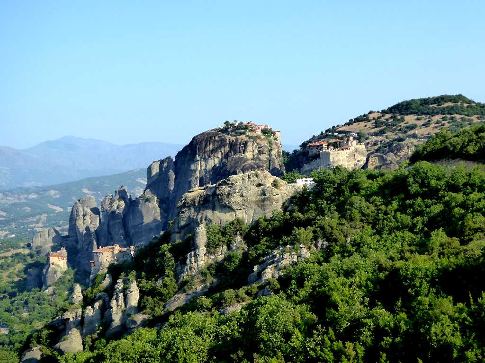
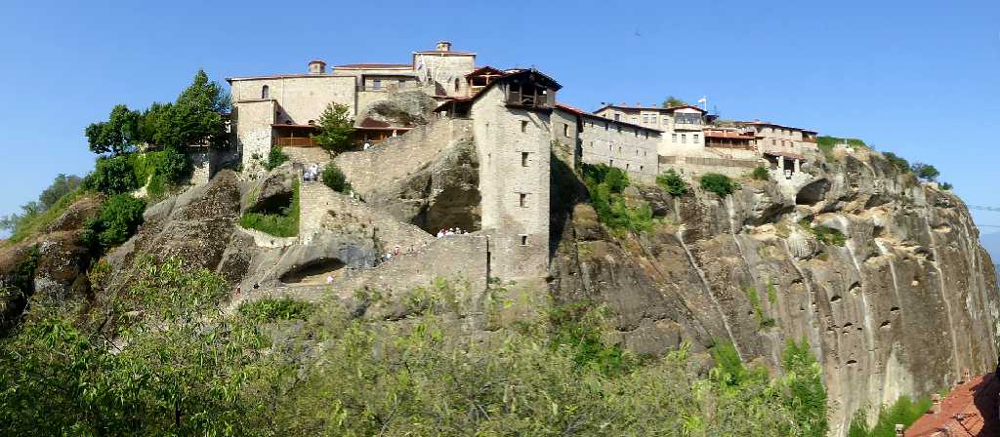
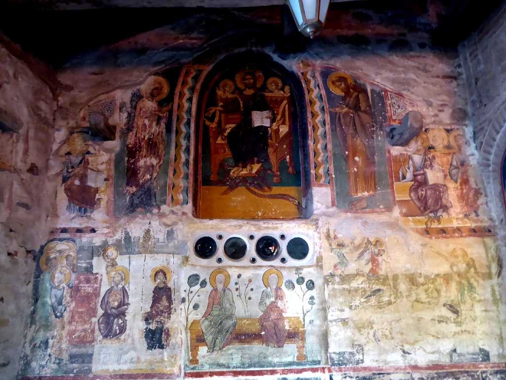
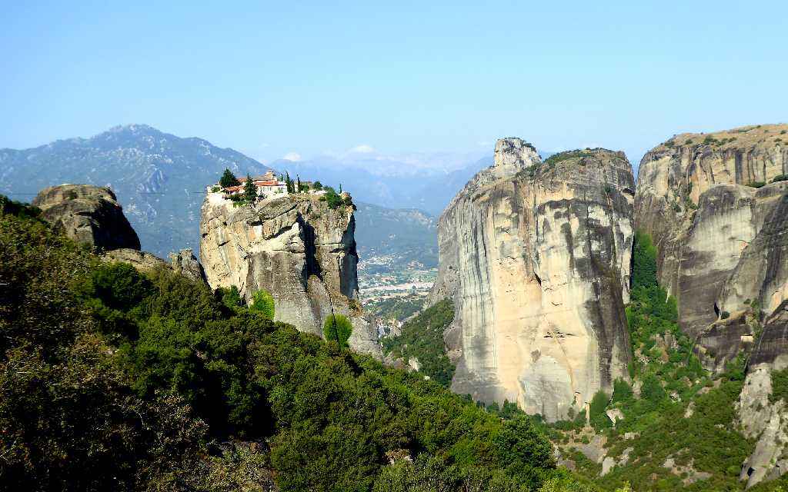
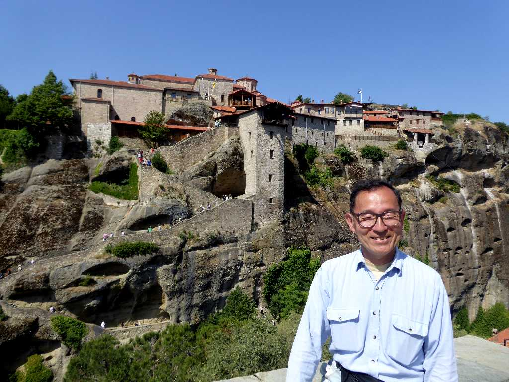

Meteora
９世紀には俗世を断ち祈りと瞑想に生きるため岩塊の裂け目や洞窟に修道士が住み着きやがてギリシャ正教の修道院を形成した中空を意味するメテオラの修道院群

Megalo Meteoron
１４世紀に創られたメテオラ最大のメガロメテオロン修道院で救世主の変容を意味する主聖堂がある

Fresco Megalo Meteoron
１４世紀に描かれた古代のフレスコ画

Monastery of the Holy Trinity
メテオラで最も古い三位一体のホーリートリニティー修道院

June 11 2018 Meteora